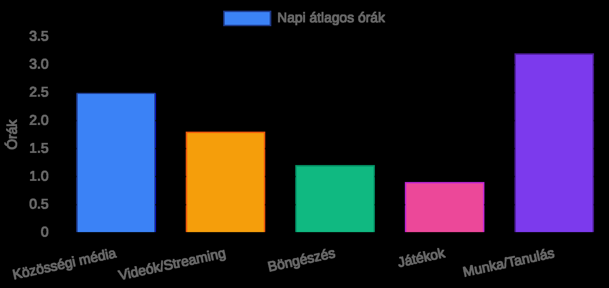
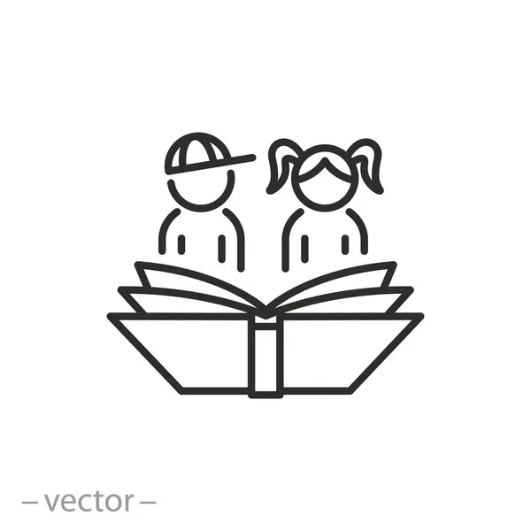
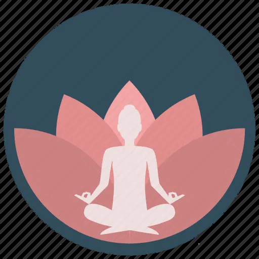
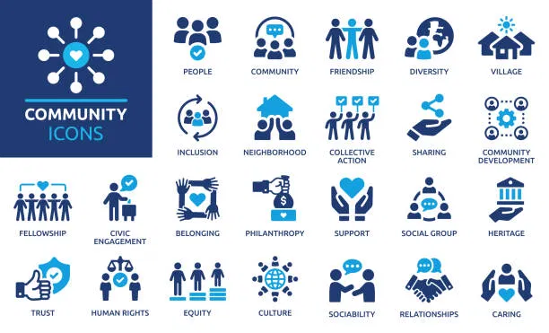
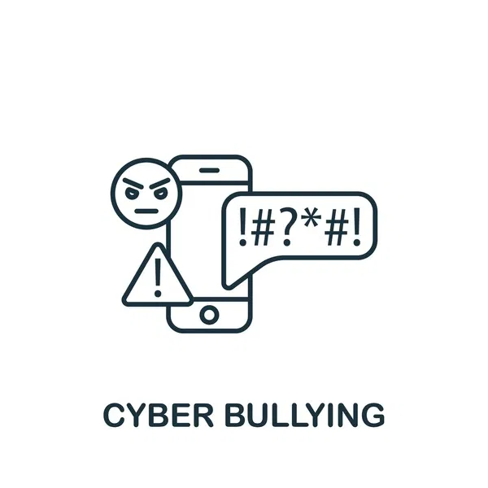

Miért fontos a digitális jóllét?

Bevezető videó: Miért fontos a digitális jóllét?
Rövid oktatóvideó a digitális eszközök hatásairól és a tudatos használat alapjairól
🎬 Videó hamarosan elérhetőTudatos Médiahasználat
🎯 Minőség a mennyiség helyett
- Válaszd ki tudatosan, mit követsz
- Unfollow-old a negatív tartalmakat
- Keress inspiráló tartalmakat
- Értékeld a tartalmak hasznosságát
⏱️ Időkorlátok beállítása
- Használj képernyőidő-korlátozást
- Állíts be napi limitet az appokhoz
- Tervezd meg előre a használatot
- Tarts rendszeres digitális szüneteket
🔍 Kritikus gondolkodás
- Kérdőjelezd meg az információkat
- Ellenőrizd a források hitelességét
- Ne hidd el azonnal, amit látsz
- Fejleszd a médiaműveltségedet
Digitális Határok Megvonása
🏠 Eszköz-mentes zónák
- Hálószoba = telefon-mentes terület
- Étkezések alatt nincs képernyő
- Családi idő alatt offline mód
- Kijelölt tech-mentes terek otthon
🔔 Értesítések kezelése
- Kapcsold ki a nem fontos értesítéseket
- Állíts be "Ne zavarj" időszakokat
- Csak sürgős alkalmazások értesíthetnek
- Csoportosítsd az értesítéseket
🕐 Időbeosztás
- Reggeli és esti "digitális csendes órák"
- Munkaidő alatt csak munka-appok
- Hétvégi digitális szünet
- Időblokkok kijelölése közösségi médiára
💬 Határok kommunikálása
- Mondd el a szabályaidat másoknak
- Ne érezz kötelezettséget azonnali válaszra
- Tanítsd meg másoknak a határok tiszteletét
- Állíts be automatikus válaszokat szükség esetén
Offline Tevékenységek Ösztönzése
🏃 Fizikai aktivitás
- Napi séta a természetben
- Sport vagy mozgás
- Kertészkedés, háztartási munkák
- Kerékpározás, túrázás
🎨 Kreatív tevékenységek
- Olvasás (fizikai könyvek)
- Kézműves foglalkozások
- Zene, rajzolás, írás
- Főzés, sütés, új receptek kipróbálása
👥 Társas kapcsolatok
- Személyes találkozók barátokkal
- Családi programok
- Közösségi rendezvények
- Társasjátékok, kártyajátékok
🧘 Mindfulness gyakorlatok
- Meditáció
- Légzőgyakorlatok
- Jóga vagy stretching
- Naplóírás, hálagyakorlatok


Digitális Detox Technikák
- Fokozatos csökkentés: Ne próbálj meg azonnal teljesen leállni – csökkentsd naponta 15-30 perccel a képernyőidőt.
- Digitális szombat: Hetente egy napot jelölj ki, amikor minimálisra csökkented az eszközhasználatot.
- Reggeli rutin: Az első 30 percben ne nyúlj a telefonodhoz – kezdd a napot tudatosan.
- Esti lekapcsolás: Lefekvés előtt 1 órával tedd le az eszközöket – a kék fény zavarja az alvást.
- Értesítések kikapcsolása: Kapcsold ki az összes nem sürgős értesítést – te döntsd el, mikor nézel rá a telefonra.
- Fizikai könyv: Cseréld le az esti görgetést egy fizikai könyv olvasására.
Képernyőidő Menedzsment

📊 Mérés és nyomon követés
- Telefonos képernyőidő funkció használata
- Digitális jóllét alkalmazások telepítése
- Heti adatok rendszeres áttekintése
- Produktív vs. szórakoztató használat megkülönböztetése
🎯 Célok és korlátok
- Napi limit beállítása appokhoz
- Értesítés, ha elérted a limitet
- Grayscale mód bekapcsolása
- Appok törlése, ha nem szükségesek
Képernyőidő kezelése – Praktikus tippek
Videó a telefonos képernyőidő-kezelő funkciók használatáról és a tudatos időgazdálkodásról
🎬 Videó hamarosan elérhetőDigitális Biztonság és Adatvédelem
🛡️ Adatvédelem Fontos
- Erős jelszavak használata
- Kétfaktoros hitelesítés bekapcsolása
- Magánélet beállítások rendszeres ellenőrzése
- Jelszavak rendszeres frissítése
📰 Fake news felismerése Fontos
- Források ellenőrzése
- Kritikus gondolkodás fejlesztése
- Megosztás előtt ellenőrzés
- Több forrás összehasonlítása
👣 Digitális lábnyom
- Gondold át, mit osztasz meg
- Töröld a régi, nem kívánatos tartalmakat
- Építsd tudatosan az online imázsodat
- Süti- és nyomkövetés-beállítások kezelése
🚫 Cyberbullying elleni védelem Fontos
- Jelentsd a zaklatást
- Blokkolj és távolítsd el a negatív kapcsolatokat
- Kérj segítséget, ha szükséges
- Ne válaszolj a provokációkra

Pozitív Digitális Közösségek
💚 Autentikus kapcsolatok
- Légy őszinte és valódi online is Fontos
- Kerüld a túlzott önreklámozást
- Mutasd meg az igazi személyiségedet
- Vállald a sebezhetőséget megfelelő mértékben
💬 Építő kommunikáció
- Pozitív kommentek írása
- Mások támogatása és bíztatása
- Konstruktív visszajelzések adása
- Aktív hallgatás és empátia Fontos
📢 Értékes tartalom megosztása
- Ossz meg hasznos információkat
- Inspirálj másokat Fontos
- Kerüld a negatív vagy káros tartalmakat
- Ellenőrizd a forrásokat megosztás előtt
🎯 Célzott közösségek
- Csatlakozz a hobbijaidhoz kapcsolódó csoportokhoz
- Keress szakmai networking lehetőségeket
- Építs kapcsolatokat hasonló értékrendű emberekkel Fontos
- Vegyél részt aktívan a közösség életében
Önreflexió és Monitoring
🧩 Önértékelő kérdések – Digitális szokásaim
Töltsd ki az alábbi kérdőívet, hogy képet kapj jelenlegi digitális szokásaidról. A válaszok csak a te böngésződben maradnak – nem kerülnek sehova.
🌟 Köszönöm a válaszaidat!
Az önreflexió első lépése a tudatosság. Nézd meg a válaszaidat, és gondold végig: melyik az a egy dolog, amin a legkönnyebben tudnál változtatni a következő héten? Kezdj kicsiben – egy kis változás is nagy különbséget hozhat!
📓 Digitális Napló – Heti nyomon követés
Kövesd nyomon a napi képernyőidődet és az offline tevékenységeidet. A beírt adatok csak a te böngésződben maradnak.
Összefoglalás és Következő Lépések
Tudatosság
Ismerd fel a digitális eszközök hatását az életedre
Egyensúly
Találd meg a megfelelő arányt az online és offline élet között
Szándékosság
Használd a technológiát céltudatosan, ne automatikusan
Kontroll
Te irányítsd az eszközeidet, ne fordítva
Összefoglaló videó: A digitális jóllét útiterve
Az egész fejezet kulcsüzeneteit összefoglaló oktatóvideó – ifjúságsegítőknek és fiataloknak
🎬 Videó hamarosan elérhető